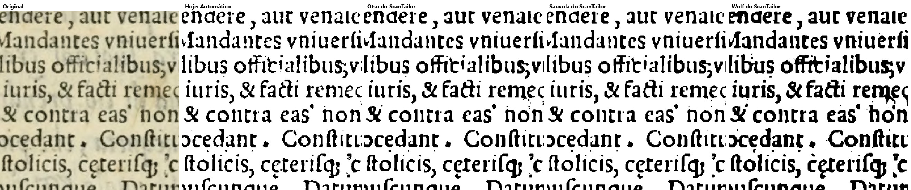
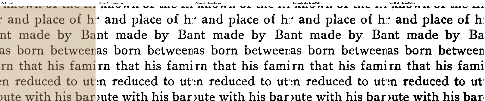
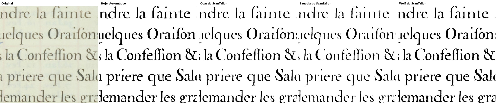
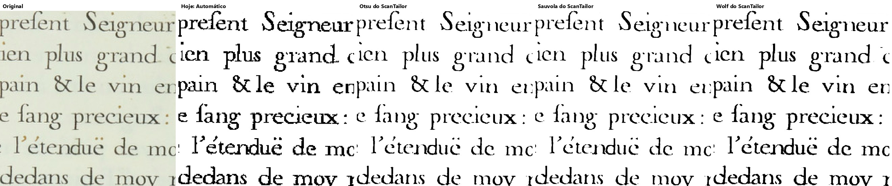
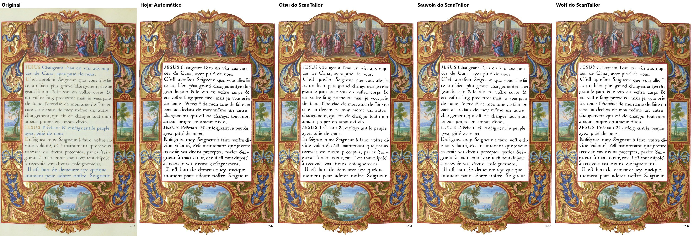
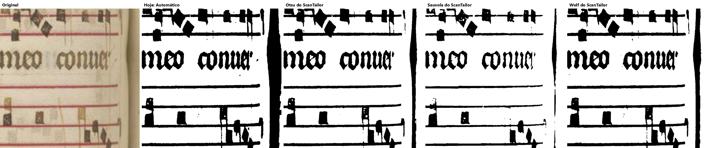
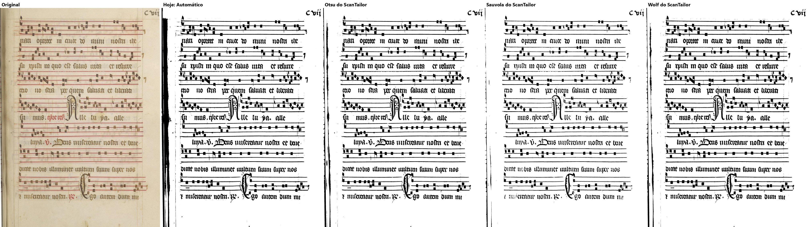
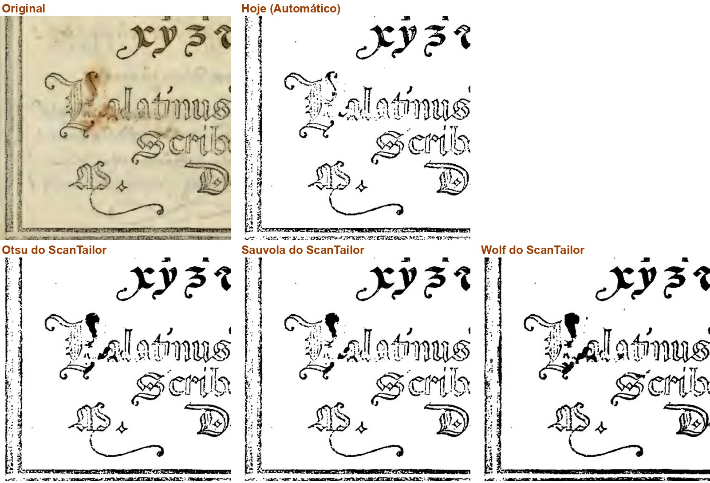
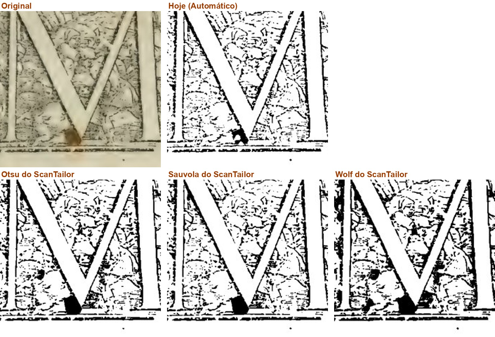

Ramo fase2-scantailor-itens-2026-10-19, commit 34b3d0e, contra o fase-1 em b8e9af7. Não mudei código; não marco nada como aprovado.
PRONTO PARA CONFERIR, com uma ressalva: desligado de fábrica está provado (somas iguais), os 8 trechos copiados do ScanTailor batem e a suíte passou. Mas a falha por memória cai no "Automático" e não chega ao erros.log (o aviso vai só para o logging do Python, que o programa não grava). Nas fotos, os jeitos do ScanTailor transformam a ferrugem do Palatino em borrão preto, e o Sauvola esvazia as notas do Graduale: bom que venham desligados.
| O que | Como | Resultado |
|---|---|---|
1. Desligado de fábrica: somas das 32 páginas-gabarito em Original, Preto e branco, Melhorar e Preto e branco com "Só as letras", no b8e9af7 e no 34b3d0e (script meu, scripts/somas.py, uma página por processo) |
máquina | iguais: 128 de 128 |
| 2. Imagens do implementador: 32 páginas inteiras (5 colunas) e 32 recortes ampliados, inclusive os 12 que ele não reabriu | olho | abertas todas (as páginas por 8 folhas de contato, os recortes um a um); ver abaixo |
3. Os 8 trechos copiados de OutputGenerator.cpp sem mudança |
máquina | conferi por conta própria (comparação linha a linha): 8 blocos, 335 linhas, todos iguais; o arquivo de referência não mudou neste ramo. tests/test_preto_e_branco_scantailor.py: 31 passaram no PC; ..._na_tela.py: 4 passaram |
| 4. Falta de memória na DLL | máquina | cai no "Automático" (sai igual, ponto por ponto). Não vai ao erros.log: ver ressalva |
5. Suíte no Windows do GitHub, rodada 39395632426 (34b3d0e) |
máquina | passou: 116 arquivos, 2084 passaram, 0 falharam, 72 pulados; botões: 221 ações, 0 falhas |
| Velocidade | - | não rodei (opção a mais e desligada; a gerente dispensou) |
| Janela | - | não pilotei; o controle novo está na lista "Algoritmo" da aba Filtro, a tela de hoje, que o layout vai mudar |
Saída do teste de falta de memória:
(a DLL fingida foi chamada)
(a) saiu igual ao Automatico: True
mensagens emitidas pelo logging: ['st_ferramentas: Faltou memória para o preto e branco desta página. (código 2: std::bad_alloc (fingido pelo verificador))', 'preto e branco do ScanTailor indisponível, usei o Automático: Faltou memória para o preto e branco desta página. (código 2: std::bad_alloc (fingido pelo verificador))']
(b) erros.log existe: False | conteudo: (nenhum)
handlers no logger raiz alem do meu: []
core/preto_e_branco_scantailor._avisar_uma_vez usa logging.warning, e o programa não liga o logging a arquivo nenhum (o erros.log só recebe registro.registrar_erro). O módulo irmão core/endireitar_scantailor.py faz igual, então é um padrão do projeto, mas a página cai no Automático sem deixar rastro. O teste do implementador cobre a queda no Automático, não o log.logging, que não é gravado). Mesmo padrão no endireitar do ScanTailor.O que você está escolhendo: se os jeitos do ScanTailor, numa página só de texto, servem como opção a mais.
Nas duas páginas as letras saem parecidas nos quatro. O Wolf deixa a letra mais grossa e escura; o Otsu e o Sauvola, mais finas, como o de hoje. É como escolher entre uma caneta fina e uma média.
Cada foto: a página como sai no PDF, Preto e branco de fábrica ("Hoje") e com três dos dez jeitos do ScanTailor, com os ajustes de fábrica dele. Nada disso muda livro já começado: os jeitos novos só valem se alguém escolher.
O que olhar: A grossura das letras.
Opções: Está bom · Melhorar · Está pior · Ainda não entendi · e um comentário.

Ampliado: Palatino 7 - Original, Hoje, Otsu, Sauvola, Wolf

Ampliado: Opus Majus 11, na mesma ordem
O que você está escolhendo: se os jeitos do ScanTailor servem como opção nas páginas finas e coloridas do Livro de Horas.
Na Horas 13 (letras azuis e vermelhas finas) o Otsu e o Sauvola afinam a letra, e o Sauvola chega a falhar; o Wolf e o de hoje saem cheios. Na Horas 47 as quatro saem iguais na moldura pintada, que fica em cor.
Cada foto: a página como sai no PDF, Preto e branco de fábrica ("Hoje") e com três dos dez jeitos do ScanTailor, com os ajustes de fábrica dele. Nada disso muda livro já começado: os jeitos novos só valem se alguém escolher.
O que olhar: As letras finas "la fainte", "Confeffion": falhas no Otsu e no Sauvola.
Opções: Está bom · Melhorar · Está pior · Ainda não entendi · e um comentário.

Ampliado: Horas 13 - Original, Hoje, Otsu, Sauvola, Wolf

Ampliado: Horas 47, na mesma ordem

Horas 47 inteira
O que você está escolhendo: se os jeitos do ScanTailor servem como opção nas páginas de música.
Nas pautas, o Sauvola deixa algumas notas vazadas, com buracos. A faixa preta da lombada muda: no 222 o Otsu a deixa grossa; no 221 é o de hoje que deixa a faixa larga e os do ScanTailor só um fio.
Cada foto: a página como sai no PDF, Preto e branco de fábrica ("Hoje") e com três dos dez jeitos do ScanTailor, com os ajustes de fábrica dele. Nada disso muda livro já começado: os jeitos novos só valem se alguém escolher.
O que olhar: As notas quadradas (vazadas no Sauvola) e a faixa preta da lombada.
Opções: Está bom · Melhorar · Está pior · Ainda não entendi · e um comentário.

Ampliado: Graduale 222 - Original, Hoje, Otsu, Sauvola, Wolf

Graduale 221 inteira
O que você está escolhendo: se aceita que os jeitos do ScanTailor fiquem disponíveis sabendo que pioram a ferrugem.
Na Palatino 66 a mancha de ferrugem ao lado da letra P some no jeito de hoje; nos três do ScanTailor ela vira um borrão preto em cima da letra. Na 67 a ferrugem embaixo do M vira um bloco preto nos três (no de hoje, uma mancha menor).
Por isso eles são opção a mais e não vêm ligados: o de hoje continua o de fábrica. Nada disso muda livro já começado: os jeitos novos só valem se alguém escolher.
O que olhar: A mancha marrom do original: some no Hoje, vira preto nos três do ScanTailor.
Opções: Está bom · Melhorar · Está pior · Ainda não entendi · e um comentário.

Ampliado: Palatino 66, a ferrugem ao lado do P

Ampliado: Palatino 67, a ferrugem embaixo do M
O que você está escolhendo: se esta entrega entra no programa.
Você pediu em 05/10 (P8): "Trazer os dez do ScanTailor como opções a mais". Eles ficam na lista "Algoritmo" da aba Filtro, depois dos três de sempre. Vêm desligados: o "Automático" de hoje continua o de fábrica, e livro já começado sai igual, ponto por ponto.
As fotos mostram três dos dez (Otsu, Sauvola, Wolf) em quatro tipos de página. Não há um vencedor: cada um ganha numa página e perde noutra.
Opções: Aprovado · Melhorar · Ainda não entendi
Editor de Impressão · gerado em 20/10/2026 às 14:42